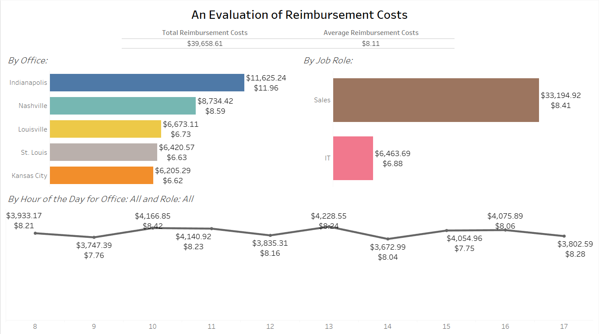
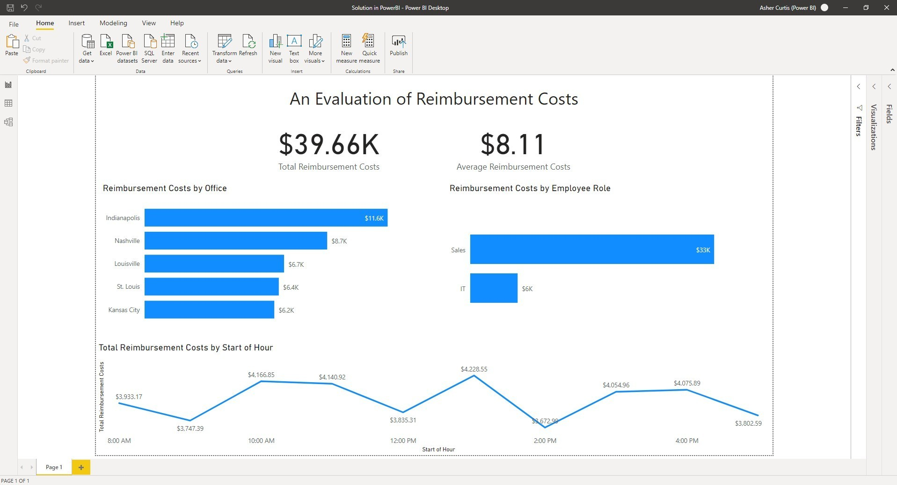
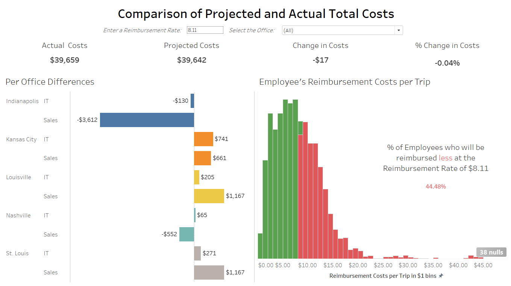
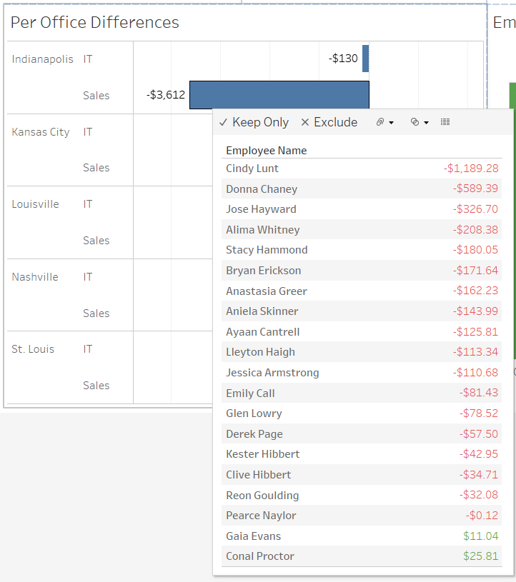
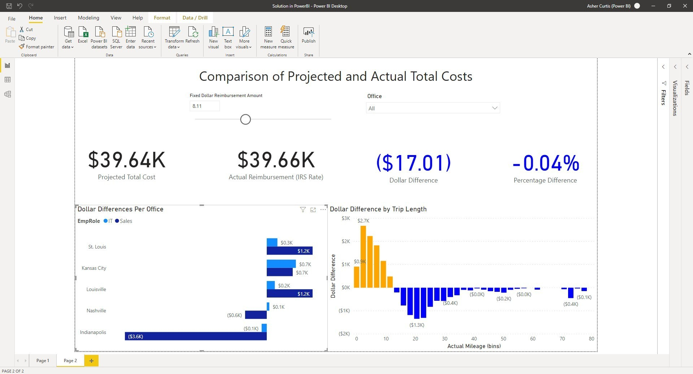

Analytics mindset
Fairview Inc.
Reimbursement calculation method
Part 1: Ask the right questions
Overview
You work as a corporate accountant for Fairview Inc., a software-as-a-service (SaaS) company. Fairview Inc. uses a unique “high-human-touch” sales and servicing model. That is, Fairview Inc. sells only within certain cities and hires numerous sales agents and information technology (IT) agents in each city where it operates. The company then has these employees visit the customers to provide face-to-face sales and support.
The model has been successful so far and Fairview Inc. now operates in five cities in the Midwestern United States: Indianapolis, Kansas City, Louisville, Nashville and St. Louis. Each city has a physical office staffed by a manager and customer support representatives. The office manager is responsible for and oversees all work done in the office. The customer support representatives field customer calls and send sales agents and IT service representatives to visit customers. When a customer support representative receives a call, they assign the employee who has not performed the task for the longest time. That way, every employee has an equal opportunity to visit customers.
Fairview Inc. pays employees for the time they are traveling to and visiting with customers. The company also reimburses employees when they travel to a customer’s business because employees use their own vehicles for transportation. After the trip, the employee submits their mileage for reimbursement. The employee submits their home address, the customer address and their self-reported mileage that they traveled to visit the customer. The company then reimburses the employee using the Internal Revenue Service (IRS) standard mileage rate.
The process of reimbursing employees has caused the CFO, Isiah Simon, major headaches. The employees’ submissions suffer from numerous data quality issues, including incomplete and inaccurate information. Entering the information into the system is error prone and data entry errors are common. Entering the data and fixing errors is time-consuming and adds little value to the company. In addition, a recent internal audit discovered that some employees were misreporting mileage and overclaiming the mileage they traveled. The company has even noticed that employees seem to be moving farther away from customers since they are paid by the mile and reimbursed for their travel time. This wastes company resources and can reduce customer satisfaction because they may not receive prompt attention.
In sum, Isiah is frustrated with this process and wants you to help prepare an analysis that examines switching to a fixed-rate reimbursement plan rather than reimbursing per mile. With a fixed-rate reimbursement plan, the company would reimburse employees a fixed rate for every trip, regardless of the travel distance, rather than reimbursements based on the actual mileage traveled. He has asked you to prepare data analytics dashboards and a report to help inform the decision-making process.
To help you prepare your report, the IT Department has compiled a list of the trips for the previous year. In total, employees sought reimbursements for 4,888 trips at a total cost of $39,658.61 and an average reimbursement rate of $8.11 per trip. The file labeled Analytics_mindset_case_studies_FairviewInc_ Reimbursement_calculation_method.csv contains the data. The following is a data dictionary for the items contained in the CSV file:
Customer Name: the name of the customer the employee visited.
Customer Trip ID: the address of the customer the employee visited.
Employee Name: the name of the employee seeking reimbursement.
Employee Trip ID: the address of the employee seeking reimbursement.
EmpRole: the role the employee performs at the company. The employee can be assigned to Sales or IT.
Office: the office to which the employee is assigned. The possible offices include Indianapolis, Kansas City, Louisville, Nashville and St. Louis.
TimeOfTrip: the time of day the employee made their trip. Note that this field contains “dirty” data. That is, the only meaningful item of data is the time stamp. The system inappropriately added a date to the time that has no meaning and should be ignored.
Actual Mileage: the IT Department created a bot using robotic process automation to scrape the mileage from the reported locations using Google Maps. This field contains the results from the bot showing the mileage between the two locations.
Implementing an analytics mindset
Having and using an analytics mindset are critical in accounting and business. This case focuses on developing all aspects of your analytics mindset. An analytics mindset is the ability to:
Ask the right questions
Extract, transform and load relevant data
Apply appropriate data analytics techniques
Interpret and share the results with stakeholders
Using an analytics mindset means using data to inform your decision, rather than going with your “gut feeling,” another person’s recommendation or using another way of deciding what to do. You will need to use the analytics mindset to decide which questions you should ask, to prepare the data for analysis, to analyze the data, and then to interpret and share meaningful results with the CFO.
Before you begin to analyze the data, you need to think about the problem that Mr. Simon has brought to you. You should consider what type of analyses would best address this problem, and what non-data factors are important to consider.
Required:
Fixed-rate reimbursement plans can be implemented in various ways. For example, plans can use a single rate for the entire company, or different rates based on different factors (e.g., employee position, office location, time of day).
Brainstorm to identify the different factors that would be valuable in evaluating the various fixed-rate reimbursement plans.
Identify the pros and cons of using different factors to determine the fixed-rate reimbursement plan in general.
Identify the pros and cons of using each of the specific factors you noted.
Which criteria and considerations should the company use to decide whether to use a fixed-rate reimbursement plan or not? If the company chooses to use a fixed-rate reimbursement plan, how should it decide what the rate should be?
What is the IRS standard mileage reimbursement rate that would be applicable in this case?
For each of the questions above, prepare a written answer and submit it for grading.
Analytics mindset
Fairview Inc.
Reimbursement calculation method
Part 2: Extract, transform and load relevant data
As previously stated, the IT Department has prepared a CSV file for your analysis. Load the prepared file into your data visualization software.
Required:
Verify that you have properly loaded your data for analysis by creating a table that shows the following information:
Actual reimbursement costs
Average actual reimbursement costs
$39,658.61
$8.11
Analytics mindset
Fairview Inc.
Reimbursement calculation method
Part 3: Apply appropriate data analytics techniques
With the data loaded into the visualization software, you are now prepared to answer Mr. Simon’s request.
Required
Prepare two dashboards for the CFO to use to make his mileage reimbursement decision. Screenshots showing what the dashboard should look like are provided on subsequent pages.
Dashboard 1: this dashboard should report how the office location, employee role and time of day influenced reimbursement costs in the past. Use the current mileage reimbursement data to analyze these factors.
Dashboard 2: this dashboard should examine how offices and employees would be influenced by changes in the reimbursement rate. This dashboard should be dynamic (i.e., use dynamic parameters) so if the CFO wants to, he can change the reimbursement rate and see how the analyses change. Include calculations that show the difference between expenses incurred using the current mileage reimbursement plan and potential flat-rate reimbursements. This dashboard should show how the costs per each office are affected by different reimbursement rates and how each individual employee will be affected by the changes.
Dashboard 1 (Tableau)

Dashboard 1 (Power BI)

Dashboard 2 (Tableau)

For the second dashboard, it should also show the following tooltip display when a user hovers over any of the bars in the Per Office Differences visualization.

Dashboard 2 (Power BI)

Analytics mindset
Fairview Inc.
Reimbursement calculation method
Part 4: Interpret and share the results with stakeholders
Once you have prepared the dashboards above, use the dashboards to make a recommendation about what Fairview Inc. should do.
Required
When you are finished analyzing the dashboards, prepare a memo for Mr. Simon to review. Mr. Simon will review your dashboards and memo when making the final decision. Make sure your memo contains a clear recommendation about what to do related to the mileage reimbursement costs and that your recommendation is supported with data from the dashboards.
Submit the following for grading:
A file containing the two dashboards you designed
Your final memo